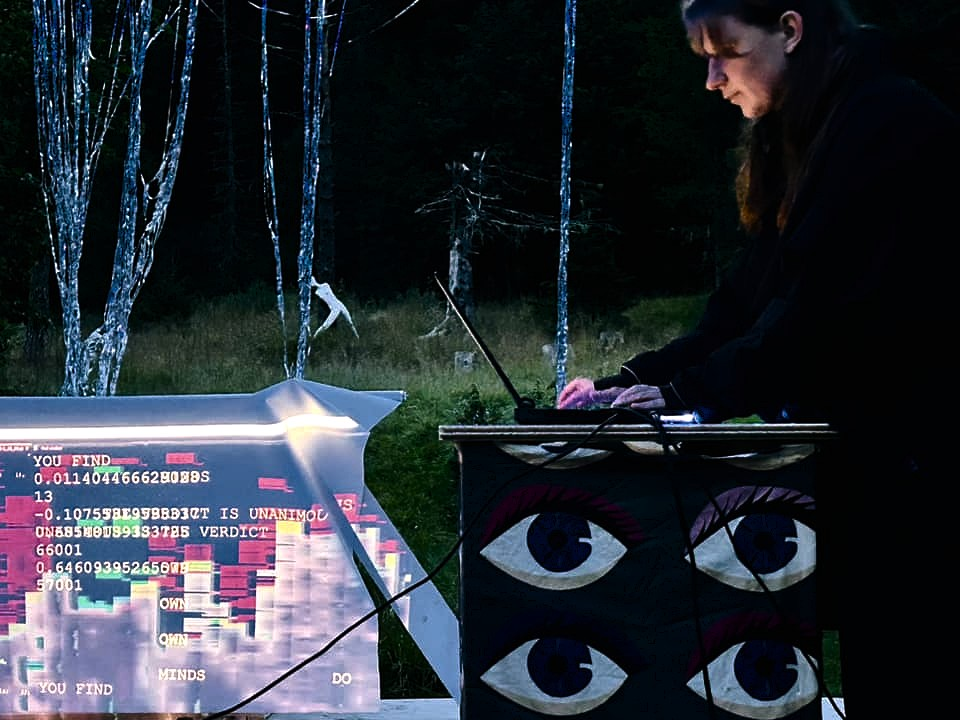

Max/MSP
Blue Moon Station
Code for the musical piece Blue Moon Station.
View on GitHub ↗
Max/MSP
Code for the musical piece Blue Moon Station.
View on GitHub ↗Max/MSP
Code for the musical piece Five Subjects.
View on GitHub ↗Max/MSP
Max/MSP setup for an installation using multiple distance sensors.
View on GitHub ↗Max/MSP
Max/MSP patch that uses the FluCoMa (Fluid Corpus Manipulation) toolkit to analyze sensor data and map it to digital sound parameters in real time.
View on GitHub ↗Alise Rancāne (b. 1995) is a Latvian composer and electronic musician working at the intersection of contemporary composition, experimental sound, and live performance.
She has participated in a wide range of acoustic and electroacoustic music projects, writing for chamber ensembles, creating electronic music works, and collaborating with visual artists, theatre makers, and interdisciplinary performers.
Rancāne holds master’s degrees in Composition from the Jāzeps Vītols Latvian Academy of Music and in Creative Music Technology from the Norwegian University of Science and Technology (NTNU).
Alongside her compositional practice, Rancāne is an electronic music performer. Her recent work involves developing custom sensor-based instruments that combine physical gestures, machine learning, and real-time sound synthesis.
Her artistic interests include live coding, interactive systems, improvisation, spatial sound, and experimental approaches to electronic music performance.